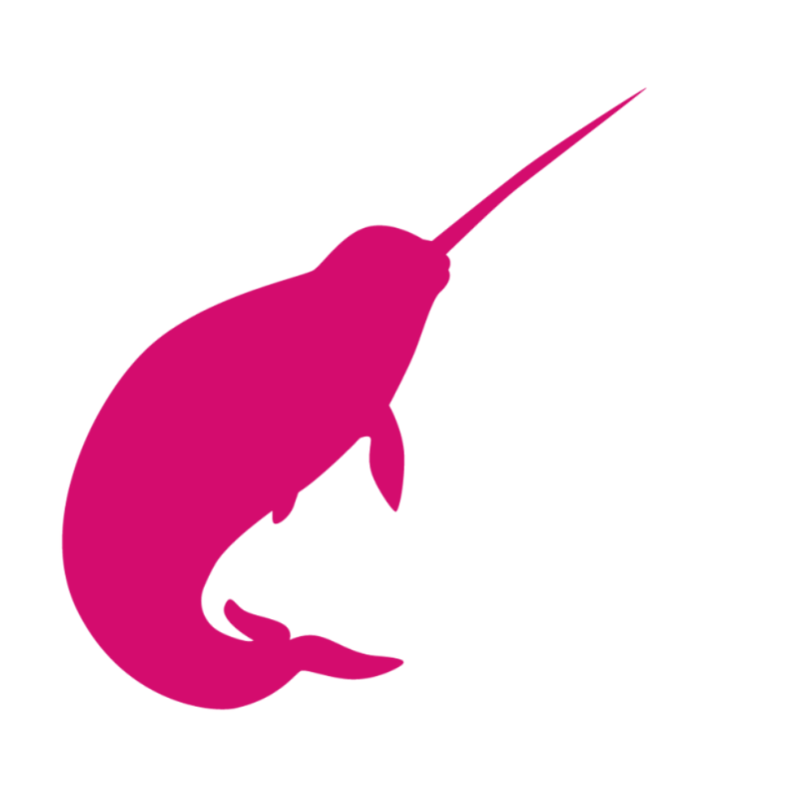
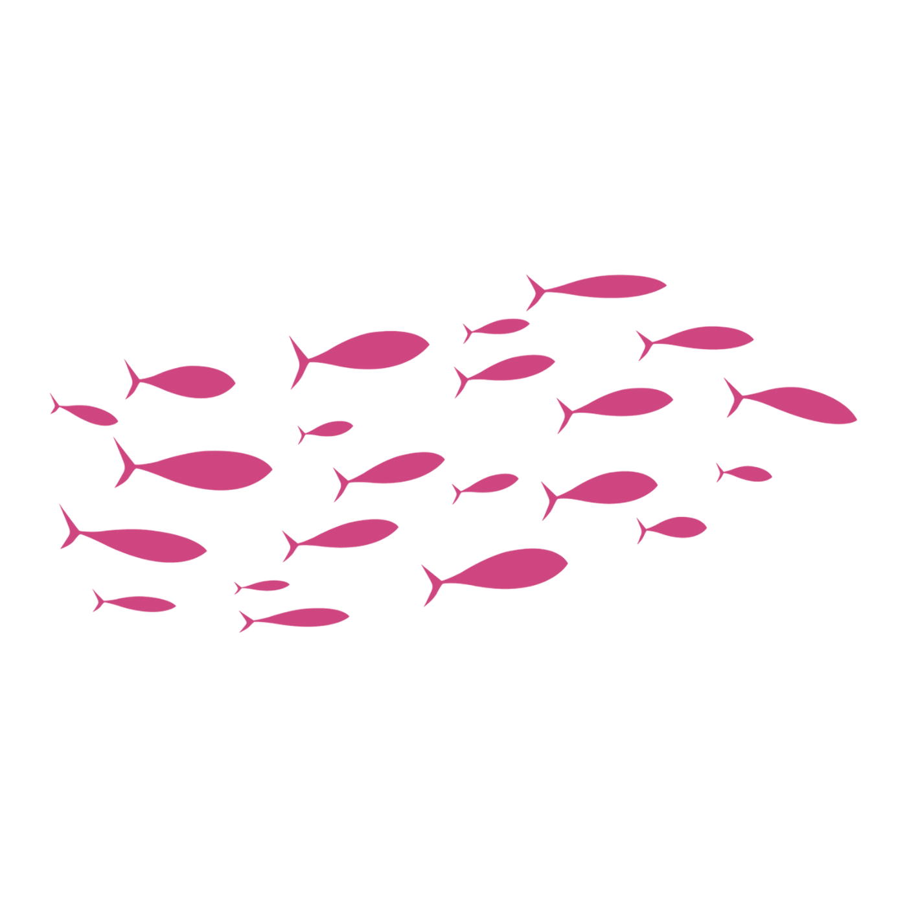

Let's collect data together


Monitoring and maintaining marine life is important because of the significance marine ecosystems hold to environmental stability and human economy. 95% of all the organisms on Earth are located in the ocean. Aquatic life supports global industries like tourism, biotechnology, fisheries, and shipping; the global ocean economy was valued at about $1.5 trillion in 2010 and is projected to exceed $3 trillion by 2030.
Additionally, over 500 million people in over 100 countries depend on coral reefs for food and cultural value. Yet, only 25% of the ocean has been mapped demonstrating a lack of attention to monitoring the ocean.
One study involving research done at 77 coral reef sites relates the importance of fish as an indicator of reef health. It found that 57% of the changes in trophic levels (food chain positions) were linked to reef condition and human pressure therefore, helping scientists detect an ecosystem imbalance. In some instances, specific fish were found to reflect specific traits in a coral reef, for example, butterflyfish populations increase when live coral covers are high.
Through our "fintastic" website, we aim to further identify and research the various fish species in the Miami coral reefs, sharing with the community our findings and engaging the public by inciting change through awareness and small actions.